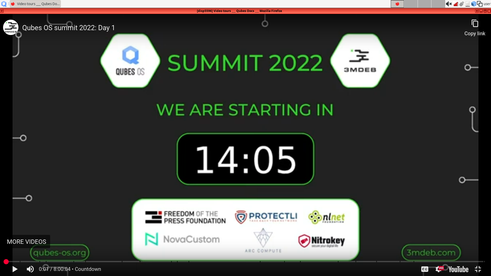
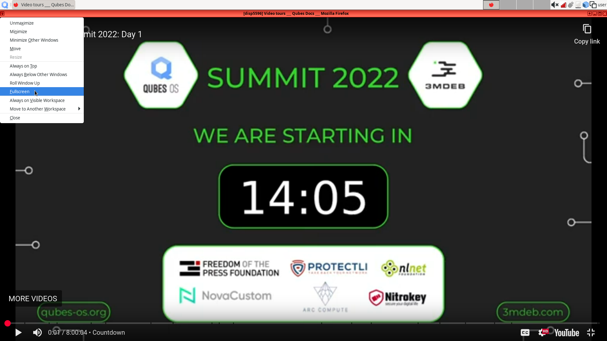
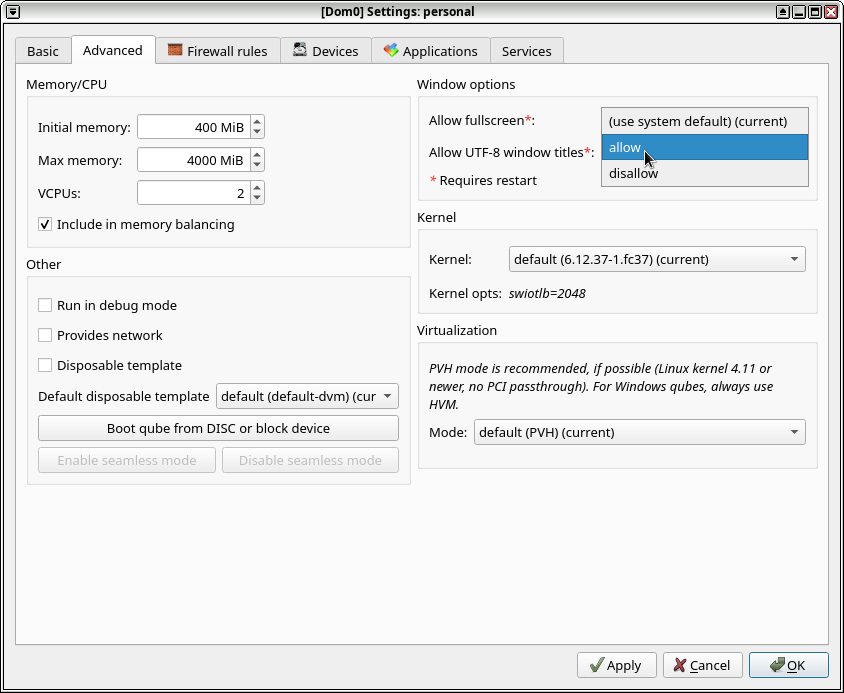
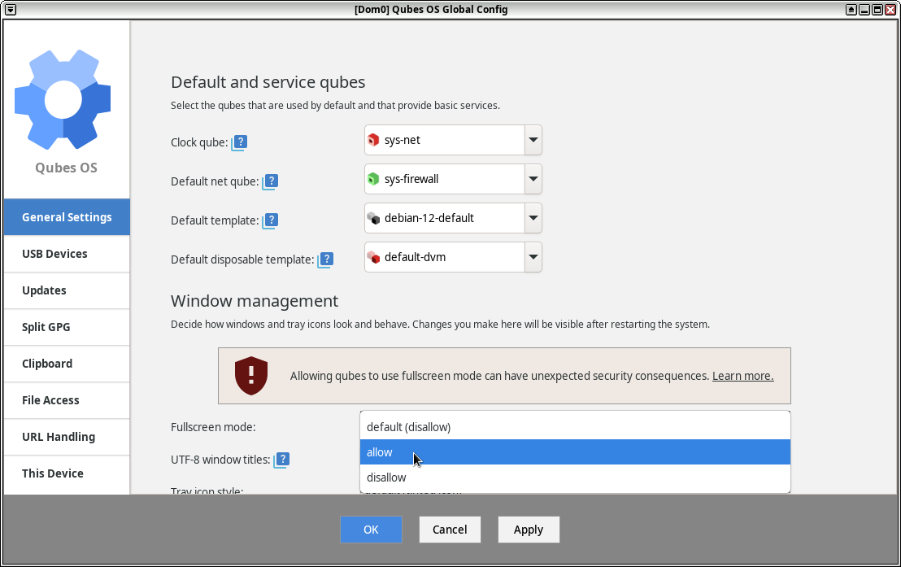

How to enter fullscreen mode
The easiest ways to enter fullscreen mode are:
With a mouse: right-click on a window title, then click on Fullscreen
With a keyboard: press Alt + Space and select Fullscreen (or type F)
With a keyboard shortcut: press Alt + F11
This page discusses the security implications of fullscreen mode and alternate solutions to allow fullscreen mode.
What is fullscreen mode?
Normally, the Qubes GUI virtualization daemon restricts any qube from ”owning” the full screen, ensuring that there are always clearly marked decorations drawn by the trusted Window Manager around each of the qubes’ windows. This allows the user to easily realize to which domain a specific window belongs.

Trying to enter fullscreen mode from a qube fails
While browsing the page Video tours in a disposable qube (disp5596), the user tries to enter fullscreen mode from the qube itself. Even if fullscreen mode is selected, the top bar of dom0 is still present. The window is decorated in red, providing the name of the qube.
Why is fullscreen mode potentially dangerous?
If one allowed a qube to “own” the full screen, e.g. to show a movie on a full screen, it might not be possible for the user to know if the application or the qube really “released” the full screen, or if it has started emulating the whole desktop and is pretending to be the trusted Window Manager, drawing shapes on the screen that look like other windows, belonging to other domains (e.g. to trick the user into entering a secret passphrase into a window that looks like belonging to some trusted domain).
That’s why fullscreen mode is not allowed by default, when requested from a qube.
Secure use of fullscreen mode
However, it is possible to deal with fullscreen mode in a secure way assuming there are mechanisms that can be used at any time to switch between windows or show the full desktop and that cannot be intercepted by the qube. The simplest example is the use of Alt + Tab for switching between windows, which is a shortcut handled by dom0.
Other examples of such mechanisms are the KDE “Present Windows” and “Desktop Grid” effects, which are similar to Mac’s “Expose” effect, and which can be used to immediately detect potential “GUI forgery”, as they cannot be intercepted by any of the qube (as the GUID never passes down the key combinations that got consumed by the KDE Window Manager), and so the qube cannot emulate those. Those effects are enabled by default in KDE once Compositing gets enabled in KDE (), which is recommended anyway. By default, they are triggered by the Ctrl + F8 and Ctrl + F9 key combinations, but can also be reassigned to other shortcuts.
Safely enabling fullscreen mode for a selected window
You can always put a window into fullscreen mode in Xfce4 using the trusted window manager by right-clicking on a window’s title bar and selecting Fullscreen or pressing Alt + F11. This functionality should still be considered safe, since a qube window still can’t voluntarily enter fullscreen mode. The user must select this option from the trusted window manager in dom0. To exit fullscreen mode from here, press Alt + Space to bring up the title bar menu again, then select Leave Fullscreen or simply press Alt + F11. For HVM, you should set the screen resolution in the qube to that of the host, (or larger), before setting fullscreen mode in Xfce4.

Enabling fullscreen mode from a selected qube
Warning
Be sure to read Secure use of fullscreen mode first.
As an alternative to the Xfce4 method, you can enable fullscreen mode for selected qubes by using a gui-* feature called gui-allow-fullscreen.
Be sure to restart the qube after modifying this feature, for the changes to take effect.
With the qube’s settings
In the qube’s settings, go to the second tab, called Advanced. Under Window options, change the value of Allow fullscreen, from (use system default) (current) to disallow.

With the command-line, targeting the qube
In dom0, run the following command, replacing <QUBE_NAME> with the actual name of the qube:
[user@dom0] $ qvm-features <QUBE_NAME> gui-allow-fullscreen 1
Enabling fullscreen mode for every qube
Warning
Be sure to read Secure use of fullscreen mode first.
With Qubes Global Config
Open Qubes Global Config. In the first tab (called General settings), under the Window management: section, change the value of Fullscreen mode, from default (disallow) to allow.

With the command-line, in dom0
In dom0, run the following command:
[user@dom0] $ qvm-features dom0 gui-default-allow-fullscreen 1